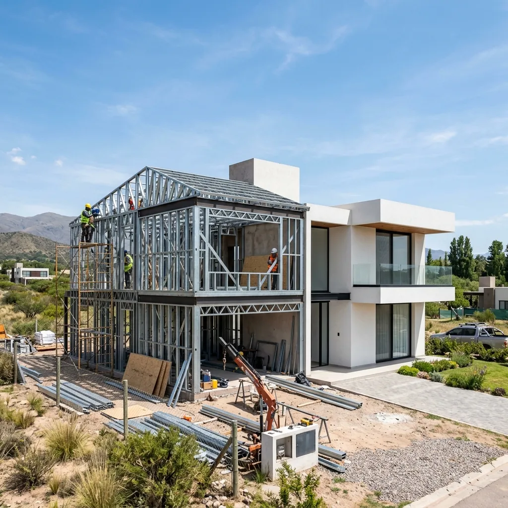
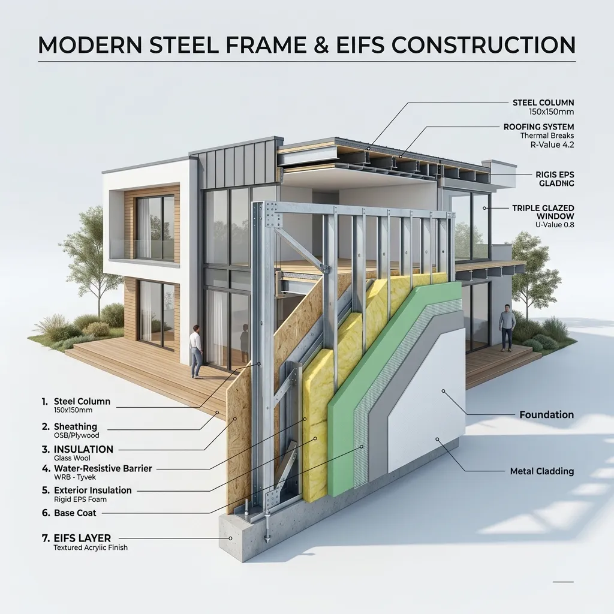
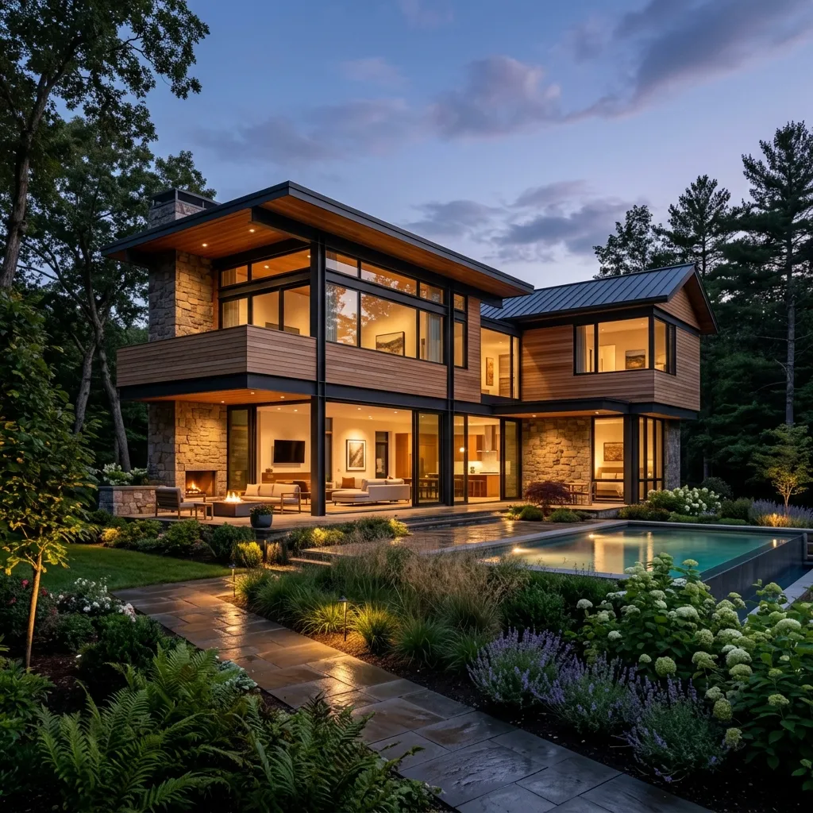

Ventajas y Desventajas
del Steel Framing
Si vas a construir una vivienda en seco, es crucial entender tanto los enormes beneficios en eficiencia y velocidad como las exigencias reales del sistema. En Constructora ByB creemos en la honestidad de la ingeniería: te explicamos con precisión cada pro y contra, y cómo mitigamos los retos con nuestro equipo certificado.

construction Ingeniería de Detalle Rigurosa
Garantía estructural mediante cálculo sismorresistente bajo normas IRAM.
Los Pros y Contras del Sistema
Utilizá las pestañas para alternar y hacé clic en las tarjetas para descubrir cómo Constructora ByB maximiza cada ventaja o mitiga los retos.
Velocidad de Ejecución Excepcional
Los plazos de entrega se reducen drásticamente debido a la ausencia de fraguado húmedo. Las estructuras se arman en taller y se ensamblan rápidamente.
Aislamiento Térmico y Acústico Extra
Las capas del muro albergan aislantes térmicos continuos (lana de vidrio, EPS), logrando un coeficiente K muy bajo y un ahorro de gas y luz de hasta el 60%.
Precisión de Medidas y Escuadras
No existen variaciones por "plomo" o "escuadras torcidas". Las paredes resultan perfectamente rectas y las esquinas marcan 90° exactos.
Requiere Mano de Obra Especializada
Un albañil tradicional o instalador novato puede cometer errores costosos al anclar la estructura, rigidizar perfiles o sellar juntas.
Rigidez de Planificación en Obra
No se pueden improvisar cambios en obra fácilmente. Las tuberías de agua y electricidad viajan por los perfiles calculados de antemano.
Desembolso de Capital Concentrado
Al avanzar tan rápido, los materiales clave del sistema (acero, placas, aislantes) deben adquirirse e instalarse en un periodo corto.
¿Es el Steel Framing la mejor opción para tu casa?
No todos los proyectos son iguales. Realizá nuestro test interactivo en 1 minuto. Evaluamos las necesidades de tu terreno, tiempos y preferencias de climatización en Tucumán para indicarte el nivel de compatibilidad con la construcción en seco de forma inmediata.
Ventaja ByB:
Si el resultado indica baja compatibilidad, nuestro equipo de diseño adapta la ingeniería combinando sistemas híbridos.

Métricas de Rendimiento Técnico
Contenido Relacionado
Ahorro Energético
Descubre cómo reducir hasta un 60% el consumo de calefacción y refrigeración con aislamiento premium.
Sistema Steel Framing
Descubre cómo funciona la composición por capas y la estructura metálica sismorresistente.
Steel vs Tradicional
Comparamos costos, tiempos de obra y aislamiento frente a la construcción tradicional con ladrillo.
Construcción en Seco
Guía completa sobre materiales, Durlock, placas cementicias y cotizaciones por m².

¿Estás listo para construir tu casa de acero?
Hacé realidad tu casa ideal sin sorpresas financieras, con plazos fijos certificados por contrato y el mejor aislamiento térmico del mercado argentino.